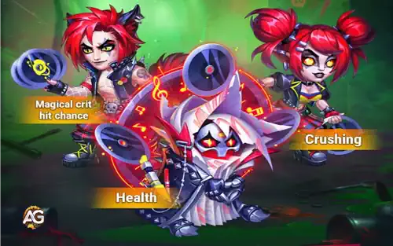

As Skins Mascaradas em Hero Wars Alliance são mais do que simples adições cosméticas elas são poderosos impulsionadores de atributos que podem mudar o rumo das batalhas. Com a introdução das novas Skins Mascaradas para Satori, Fólio e Kayla, os jogadores agora têm a chance de fortalecer significativamente esses heróis. Cada skin não apenas melhora o desempenho geral do herói, como também se encaixa perfeitamente em diferentes composições estratégicas nos modos PvE e PvP.
Cada skin não apenas melhora o desempenho geral do herói, como também se encaixa perfeitamente em diferentes composições estratégicas nos modos PvE e PvP. Seja você um jogador que prefere montar uma equipe mágica de alto dano ou uma linha de frente resistente, essas skins fornecem os atributos necessários para competir no meta em constante evolução de Hero Wars Alliance. Vamos analisar os efeitos de cada skin e seu valor estratégico.

Skins Mascaradas: Satori, Fólio e Kayla para Hero Wars Alliance.
Skin+ Mascarada do Satori: Chance de Acerto Crítico Mágico
A Skin+ Mascarada do Satori introduz um atributo que muda o jogo: Chance de Acerto Crítico Mágico, oferecendo um bônus impressionante de +2960, que dobra para 5920 quando equipada como Skin+. Isso torna o Satori um dos magos de explosão mais letais do jogo. Suas habilidades reformuladas agora têm uma sinergia ainda maior com essa skin, especialmente contra heróis que geram energia extra, como Orion, Jorgen e Octavia. A capacidade de aplicar as Marcas de Fogo da Raposa se torna exponencialmente mais poderosa com ataques mágicos baseados em crítico.
Em batalhas competitivas, essa skin permite que Satori dispare acertos críticos mágicos que causam 2,5x o dano normal, desestabilizando até as equipes mais defensivas. Ela também se encaixa muito bem com construções focadas em penetração mágica, tornando o Satori uma escolha de primeira linha para composições fortemente mágicas. A Skin+ Mascarada é rara e só pode ser obtida por meio de eventos por tempo limitado ou Baús Heroicos, sendo uma verdadeira joia para jogadores dedicados. Por outro lado, a skin Mascarada padrão é mais acessível e pode ser desbloqueada posteriormente com Certificados de Skin, sendo um excelente investimento a longo prazo.
Além disso, essa skin pode ser usada para contra-atacar composições resistentes, punindo heróis famintos por energia que tentam usar habilidades repetidamente. À medida que mais jogadores adotam heróis focados em energia, a eficácia do Satori com essa skin só aumenta. Ele não apenas bloqueia o ganho de energia, mas agora também causa ainda mais dano em troca. Jogadores que curtem assassinos mágicos de linha média vão perceber que a Skin+ Mascarada eleva o Satori a um novo patamar. Seja na Arena, na Guerra de Guildas ou na Campanha, essa skin realmente faz diferença nos resultados das batalhas.
Prioridade de Skins do Satori
Skins
Chance de Acerto Crítico Mágico (Skin+)
Penetração Mágica
Ataque Mágico
Inteligência
Armadura
Defesa Mágica
Skin Mascarada do Fólio: Vida
A Skin Mascarada do Fólio concede a ele um impressionante bônus de +106.645 de Vida, aumentando significativamente sua durabilidade e tornando-o muito mais difícil de ser eliminado logo no início dos combates. Esse aumento de vida garante o tempo necessário para liberar suas poderosas habilidades mágicas, tornando-o uma escolha essencial em muitas equipes focadas em defesa e controle. Como um herói recém-lançado, Fólio está rapidamente se tornando um dos favoritos no meta da Hero Wars Alliance, e cada nova skin só reforça ainda mais sua eficácia.
Com alta vida, Fólio se torna mais resistente a assassinos e causadores de dano explosivo, sobrevivendo tempo suficiente para lançar habilidades cruciais que mudam o rumo das batalhas. Ele também tem boa sinergia com heróis como Satori, Amira, Soleil e Tempus, formando uma retaguarda mágica resiliente. Embora sua Skin+ de Inverno continue sendo a melhor opção por conta da Penetração Mágica, a Skin Mascarada é uma excelente terceira escolha para quem busca aumentar a sobrevivência no PvP especialmente no novo formato da Arena, onde essa skin oferece uma combinação sólida de estilo e funcionalidade para os mains do Fólio.
Além disso, o aumento no total de vida permite que Fólio chame atenção dos inimigos e proteja aliados mais frágeis, funcionando como um "pseudo-tanque" em algumas formações. Suas habilidades de controle de grupo se tornam mais eficazes quando ele não é eliminado instantaneamente, e sua sinergia com efeitos de tempo e curas contínuas o torna ideal para combates prolongados. Jogadores que buscam um conjurador confiável, capaz de resistir aos primeiros segundos da batalha, encontrarão um enorme valor nesta Skin Mascarada.
Prioridade de Skins do Fólio
Melhores Skins para Fólio em Hero Wars Alliance
Prioridade
Atributo
Skin
1º
Penetração Mágica +21.300
Skin de Inverno+
2º
Inteligência +1.365
Skin Padrão
3º
Vida +106.645
Skin Mascarada
Skin Mascarada da Kayla: Esmagamento
A Skin Mascarada da Kayla introduz +5.920 de Esmagamento, tornando sua presença no campo de batalha ainda mais devastadora. O atributo Esmagamento aumenta todos os tipos de dano (Físico, Mágico e Puro) contra inimigos com pouca vida, permitindo que Kayla atue como uma executora eliminando ameaças antes que tenham chance de se recuperar. Isso faz dela a heroína ideal para finalizar tanques, suportes ou qualquer inimigo à beira da morte após um ataque inicial.
O atributo Esmagamento tem excelente sinergia com o estilo de jogo agressivo da Kayla. Quando combinada com heróis que enfraquecem os inimigos ou reduzem suas defesas, como Mushy e Shroom ou Amira, Kayla se torna o golpe final que garante a eliminação. Com o aumento do uso de tanques com muita vida no meta atual, essa skin garante que Kayla continue cortando defesas de fim de jogo com facilidade. Ela também complementa bem a Skin Solar+ e a Skin Cibernética, permitindo aos jogadores personalizar Kayla como uma causadora de dano pura ou uma atacante equilibrada com mais resistência.
Esse atributo também transforma Kayla em uma finalizadora mais confiável em missões de campanha e lutas contra chefes, onde os inimigos possuem defesas pesadas e barras de vida longas. Quando usada corretamente, sua bonificação de Esmagamento garante que nenhum alvo sobreviva além de certo ponto. Combinada com penetração de armadura e habilidades em área (AoE), ela se torna uma ameaça que desencoraja estratégias defensivas. A Skin Mascarada vai além do visual estiloso ela oferece uma vantagem tática que pode ser explorada em vários modos, incluindo Arena e Torre.
Com certeza. As Skins Mascaradas em Hero Wars Alliance são muito mais do que simples visuais chamativos. Elas trazem atributos únicos e impactantes que influenciam diretamente o resultado das batalhas. Para Satori, o bônus de Chance de Acerto Crítico Mágico o torna um mago explosivo viável em combates de alto nível. Fólio se torna muito mais resistente, sobrevivendo mais e contribuindo melhor para o sucesso da equipe. Já o atributo Esmagamento da Kayla a coloca no patamar das finalizadoras de elite, garantindo que os inimigos não escapem quando estão com pouca vida.
Essas skins se encaixam perfeitamente nas equipes do meta atual (e futuras), e as versões raras Skin+ oferecem ainda mais poder para quem tiver a sorte de desbloqueá-las. Seja jogando por diversão ou visando o topo dos rankings, investir nessas skins elevará seu desempenho. Como sempre, recomendamos planejar os aprimoramentos de skin de acordo com a composição do seu time e os recursos disponíveis.
Em resumo, as Skins Mascaradas não são apenas visualmente impressionantes elas são estrategicamente valiosas, especialmente quando alinhadas com os objetivos da sua equipe. Elas aprimoram o desempenho baseado em função e fazem com que heróis já fortes brilhem ainda mais. Se você gosta de jogar com Satori, Fólio ou Kayla, essas skins representam alguns dos upgrades mais eficientes disponíveis. Fique de olho nas rotações de eventos ou ofertas especiais para adquiri-las com o melhor custo-benefício.
Fique ligado no nosso site para mais guias, análises e coberturas de eventos de Hero Wars Alliance. Não se esqueça de salvar esta página nos favoritos e compartilhá-la com sua guilda!
Explore novas habilidades com nossos heróis em destaque!
Você curtiu nossa análise das Skins Mascaradas do Satori, Fólio e Kayla para Hero Wars Alliance? Tem algo que não entendeu ou gostaria de sugerir alguma mudança? Te convidamos a participar da seção de comentários na página do Blog Alexandre Games. Fique à vontade para expressar sua opinião, tirar dúvidas e compartilhar suas ideias. Clique no botão abaixo para começar:
 Análise da Skin Celestial da Kayla – HWA
Análise da Skin Celestial da Kayla – HWA Guia da Skin Celestial+ da Octavia – HWA
Guia da Skin Celestial+ da Octavia – HWA Guia da Skin Celestial do Aidan – HWA
Guia da Skin Celestial do Aidan – HWA